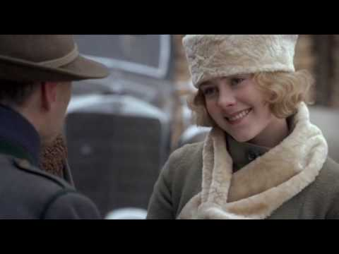

Assim:
Elas eram nazistinhas, germanicas, branquinhas, lindas, arianas, peitudas e bundudas
 Pode-se observar nessa foto a maravilhosa sobrinha de Hitler, Geli, interpretada graciosamente por Jena Malone no FILME, chamado: A Ascensão do mal, que tem como personagem principal o próprio Hitler renascido. sabia que hitler comia a propria sobrinhakkkkk?
Próxima páginakkk
Existe liberdade de expressão?